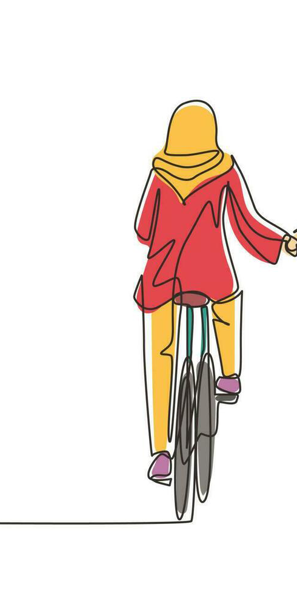
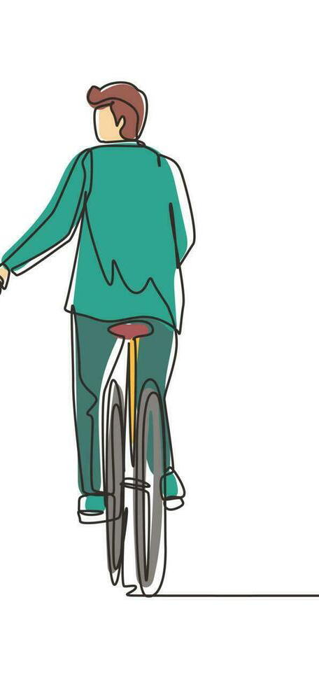

MARDI 6 OCTOBRE 2026
PARIS · 2026
À DEUX, C’EST MIEUX
Main dans la main
Clique rapidement dans la scène ou appuie sur la barre d’espace pour vous rapprocher.


À toi de jouer 💜
FIN DE NOTRE PETITE HISTOIRE
Joyeux anniversaire, Anja.
Une soirée qui restera parmi mes plus beaux souvenirs. Je t’aime. 💜